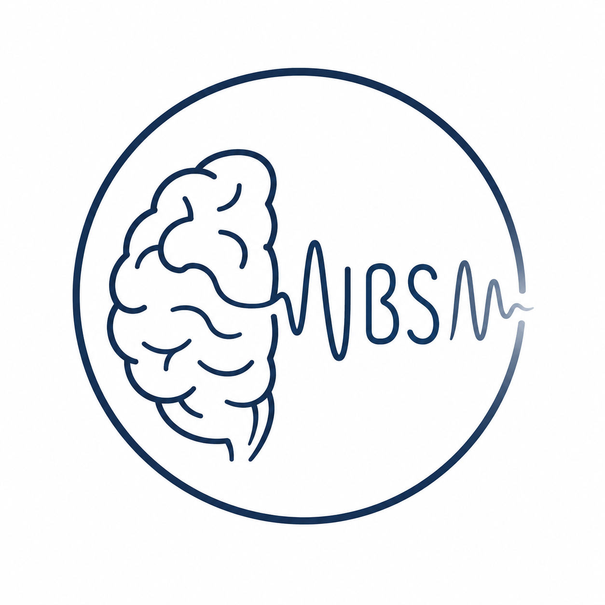

CDPR — Frontlab
The ICM handles the global presentation of the institute.
Here are the links to the Frontlab presentation:
This document is for CDP use.
At the CDPR-team level, there are 3 main data sources you have to be aware of:
Make sure to have authorization soon.